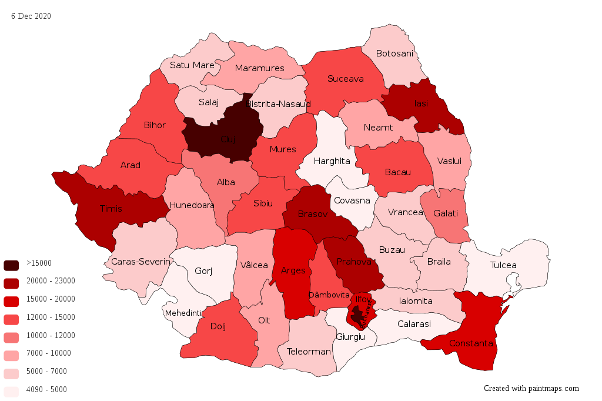

Pandemia de coronavirus din România este o epidemie aflată în curs de desfășurare pe teritoriul României cauzată de noul coronavirus 2019-nCoV (SARS-CoV-2), virus care provoacă o infecție numită COVID-19, care poate fi asimptomatică, ușoară, moderată sau severă. Infecția severă include o pneumonie atipică severă manifestată clinic prin sindromul de detresă respiratorie acută

Originea infecției
Infecția cu virusul SARS COV-2 a apărut în decembrie 2019 în orașul Wuhan, China, de unde s-a propagat în majoritatea provinciilor chineze și majoritatea țărilor din lume, provocând o pandemie.În Europa cele mai multe cazuri sunt înregistrate în Spania. În România inițial au fost confirmate numai cazuri de import din Italia la persoanele venite din această țară sau care au avut contact cu o persoană din această țară. O sursă importantă a infecției în România sunt persoanele venite din afară care nu s-au autoizolat la domiciliu sau care au mințit că nu au fost într-o zonă afectată de infecția COVID-19. Fostul Ministrul al Sănătății, Victor Costache, a afirmat că din cele 277 de cazuri confirmate până în 19 martie 2020, peste 80 la sută erau cazuri de import și ceilalți erau contacți ai cazurilor de import. Au fost deschise mai multe dosare penale pentru zădărnicirea combaterii bolilor, în care sunt vizate persoanele care nu au stat în autoizolare la domiciliu 14 zile și cei care nu au comunicat că au venit din zonele afectate sau nu au comunicat că au avut contact cu o persoană testată pozitiv pentru coronavirus. Persoanele care se întorc din țările incluse în zonele roșii vor fi carantinate, iar cei care se întorc din țările incluse în zonele galbene vor sta în izolare la domiciliu 14 zile. Lista țărilor incluse în zonele roșii și galbene poate fi consultată pe pagina Institutului Național de Sănătate Publică sub titlul: „Lista zonelor afectate de COVID 19”. Numărul cazurilor confirmate de COVID-19, persoanelor decedate sau izolate și persoanelor în carantină în România poate fi consultată pe pagina Institutului Național de Sănătate Publică. Informațiile Grupului de Comunicare Strategică despre evoluția epidemiei în România și măsurile luate de autorități pot fi consultate pe pagina Ministerului Afacerilor Interne sau pe pagina Guvernului României.